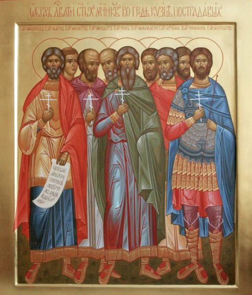

Текст утвержден Священным Синодом 25.08.2022г.
Избра́ннии от Царя́ Сил, Го́спода Иису́са, страстоте́рпцы Христо́вы девяточи́сленнии, от разли́чных стран в гра́де Ки́зице во еди́но собра́ннии и Христа́ дерзнове́нне, мук и сме́рти не убоя́вшеся, испове́давшии, торжеству́ем духо́вне во святе́м пра́зднице ва́шем и, воспева́юще благода́тную терпе́ния ва́шего до́блесть, мо́лим вас, во́и Христо́вы многострада́льнии и утвержде́ннии в во́ли Христо́вей, и нам спасе́ния испроси́те, зову́щим:
Ра́дуйтеся, прехва́льни му́ченицы Христо́вы девяточи́сленнии.
Я́ко А́нгели преми́рнии, возне́сшеся мы́слию от земны́х к небе́сным, ко Христу́, Влады́це всех, непреста́нно ве́ры очи́ма взира́юще, му́ченицы святи́и, Ру́фе, Антипа́тре, Феогни́де, Феости́ше, Арте́мо, Ма́гне, Феодо́те, Фавма́сие и Филимо́не, посреде́ кумирослужи́телей гра́да Кизи́ческаго испове́дасте себе́ безбоя́зненно христиа́ны бы́ти и, си́лою Бо́жиею укрепля́еми, мно́гия му́ки му́жественне за Христа́ претерпе́сте и под меч главы́ ва́ша преклони́сте, те́мже, ублажа́юще страда́ния ва́ша и усекнове́ние, глаго́лем:
Ра́дуйтеся, земны́я ра́дости презре́вшии; ра́дуйтеся, благ небе́сных возжеле́вшии.
Ра́дуйтеся, испове́дницы Христо́вы непобеди́мии; ра́дуйтеся, ве́ру непоро́чну соблю́дшии.
Ра́дуйтеся, стра́сти Христо́ве после́довавшии; ра́дуйтеся, смерть Христо́ву сме́ртию свое́ю подража́вшии.
Ра́дуйтеся, си́лою Воскре́сшаго держа́ву а́дову попра́вшии; ра́дуйтеся, побе́дныя венцы́ прии́мшии.
Ра́дуйтеся, прехва́льнии му́ченицы Христо́вы девяточи́сленнии.
Ви́дяще и́долов испо́лнен град Кизи́ческий, вы, о богому́дренное му́чеников Христо́вых сочета́ние девяточи́сленное, возмути́стеся ду́хом и, ре́вностию о Бо́зе горя́ще и благода́тию Боже́ственною укрепля́еми, нача́сте провещава́ти и учи́ти о и́мени Го́спода Иису́са, заблужде́ние и́дольское облича́юще. Лю́дие же, тьмо́ю неве́рия ослепле́ннии, взя́ша вас а́бие и свя́занных, а́ки злоде́ев, гра́дскому в Ки́зице кня́зю на истяза́ние предста́виша; вы же ста́сте пред нечести́вым кня́зем и, обо́лкшеся во вся ору́жия Бо́жия, я́ко во́ини Христо́вы ве́рнии, ника́коже отступи́сте от взбра́ннаго Воево́ды, Го́спода своего́, взыва́юще Ему́: Аллилу́иа.
Разуме́вающе, страстоте́рпцы Христо́вы, я́ко претерпе́вый до конца́ спасе́н бу́дет, терпе́нием теко́сте на предлежа́щий вам по́двиг, и взира́юще на Нача́льника ве́ры и Соверши́теля Иису́са, му́ки и терза́ния теле́с ва́ших претерпе́ли есте́, ра́дующеся и красу́ющеся ра́нами, я́же подъя́ли есте́ за любо́вь ко Го́споду ва́шему, те́мже зове́м вам:
Ра́дуйтеся, Христа́ Го́спода возлюби́вшии; ра́дуйтеся, за Распя́вшегося на Кресте́ пострада́вшии.
Ра́дуйтеся, поноше́ния в торжество́ ве́ры обрати́вшии; ра́дуйтеся, мук терпе́нием А́гнцу уподо́бивишиися.
Ра́дуйтеся, я́ко блаже́нна земля́, напои́вшаяся кровьми́ ва́шими; ра́дуйтеся, яко пред очи́ма Бо́жиими суть по́двизи ва́ши.
Ра́дуйтеся, ду́ши своя́ любо́вию за Христа́ положи́вшии; ра́дуйтеся, излия́вшеюся Христа́ ра́ди кро́вию просла́вленнии.
Ра́дуйтеся, прехва́льнии му́ченицы Христо́вы девяточи́сленнии.
Си́лою Бо́жиею укрепля́емии, му́ченицы девяточи́сленнии преди́внии, не убоя́стеся преще́ний злове́рнаго кня́зя Кизи́ческаго, ниже́ ко́зней неви́димаго кня́зя ми́ра сего́, но свиде́тельствовасте о Христе́ Иису́се, усты́ ва́шими испове́дающе Того́ и́стиннаго бы́ти Бо́га, Той бо даде́ вам уста́ и прему́дрость, и́мже не можа́ше что проти́ву отвеща́ти мучи́тель, но посрамля́шеся, и́стиною побежда́емый. Те́мже ужаса́хуся лю́дие, ви́дяще ва́ше до́блественное терпе́ние, и познава́ху на вас си́лу и по́мощь всеси́льнаго Бо́га, Ему́же взыва́сте: Аллилу́иа.
Иму́ще в па́мяти словеса́ Госпо́дня: и влас главы́ ва́шея не поги́бнет, ве́ровасте та́ко: не то́кмо власы́, Христа́ ра́ди терза́емии, це́ли явя́тся во сла́ве воскресе́ния, но и са́мое те́ло, ра́ны и раздробле́ние за Христа́ претерпе́вшее, це́ло воста́нет со сла́вою мно́гою. Сего́ ра́ди, страстоте́рпцы Христо́вы досточу́днии, ве́рою укрепля́еми и о наде́жде сла́вы Бо́жия хва́лящеся, до́брое тече́ние му́ченическаго по́двига соверши́сте и ду́ши своя́ святы́я в ру́це Бо́га преда́сте, те́мже и мы возно́сим вам сия́ пе́сненныя хвалы́:
Ра́дуйтеся, непобеди́мо пред мучи́тели ста́вшии; ра́дуйтеся, пречу́дным му́жеством смерть попра́вшии.
Ра́дуйтеся, ве́чныя блаже́нныя жи́зни соприча́стнии; ра́дуйтеся, наде́жду воскресе́ния яви́вшии.
Ра́дуйтеся, я́ко Христо́с преобрази́т те́ло смире́ния ва́шего; ра́дуйтеся, яко бу́дет оно сообра́зно те́лу сла́вы Его́.
Ра́дуйтеся, во све́тлостех святы́х пребыва́ющии; ра́дуйтеся, со А́нгелы песнь побе́дную воспева́ющии.
Ра́дуйтеся, прехва́льнии му́ченицы Христо́вы девяточи́сленнии.
Му́чиму ти за святу́ю ве́ру во Христа́ Го́спода, Феогни́де, бу́ря искуше́ний и бед не возможе́ поколеба́ти хра́мины души́ твоея́, основа́на бо бе на Ка́мени, И́же есть Христо́с, Сын Бо́га Жива́го; ни темни́чная заключе́ния, ни жесто́кая жи́лами бие́ния, ни ногтьми́ безжа́лостная струже́ния не отторго́ша тя от Христа́, но в страда́нии кре́пок и струя́ми крове́й свои́х, я́ко багряни́цею, оде́ян, серде́чное о́ко к Бо́гу впери́в, воспева́л еси́ Ему́: Аллилу́иа.
Слы́шавше гро́зное повеле́ние влады́ки нечести́ваго, да отве́ргнетеся Христа́ и же́ртвы принесе́те и́долом, ви́дяще же мучи́тельская ору́дия, угото́ванная на вы, страстоте́рпцы достосла́внии, помы́слисте день Втора́го прише́ствия на зе́млю Влады́ки Христа́ и нестерпи́мый гнев суда́ Его́, и преда́стеся на ра́ны и му́ки Ца́рствия ра́ди Небе́снаго. Приими́те у́бо, во́ини Христо́вы, неодоле́ннии в терпе́нии мно́зе, от нас хвале́бныя пе́сни сия́:
Ра́дуйтеся, помяну́вшии словеса́ Госпо́дня, яко отве́ргшийся отве́ржен бу́дет пред А́нгелы Бо́жии; ра́дуйтеся, внима́вшии глаго́ланным от Христа́: не убо́йтеся убива́ющих те́ло.
Ра́дуйтеся, ре́кшии са́ми себе́: мучи́тельства я́рых челове́к вре́менна суть; ра́дуйтеся, увещева́вшии друг дру́га: му́ки гее́нския ве́чны, вся́ко да избу́дем их.
Ра́дуйтеся, я́ко рече́т вам Слово Отчее: прииди́те, благослове́ннии Отца́ Моего́; ра́дуйтеся, я́ко возгласи́т вам Царь Сла́вы: насле́дуйте угото́ванное пре́жде век Ца́рство.
Ра́дуйтеся, раби́ Христо́вы, ве́рнии да́же до сме́рти; ра́дуйтеся, яко возда́де вам Госпо́дь вене́ц живота́.
Ра́дуйтеся, прехва́льнии му́ченицы Христо́вы девяточи́сленнии.
Боготе́чная звезда́, путеводя́щая к Со́лнцу Пра́вды, Христу́ Бо́гу, яви́лся еси́, святы́й му́чениче Ру́фе, и све́том по́двига твоего́ страда́льческаго возсия́л еси́ лю́дем, во тьме неве́рия седя́щим, си́ла бо благода́ти Госпо́дни в не́мощи твое́й соверша́шеся. И́бо свя́занный по рука́ма и нога́ма безче́стие и поруга́ние претерпе́л еси́, на му́ки дерзну́л еси́ и жи́зни не пощаде́л еси́ за Го́спода своего́, но, же́злием и бичи́ узла́ты жесто́ко бие́н быв и огне́м опаля́емь, взыва́л еси́ к Спа́су велегла́сно: Аллилу́иа.
Ви́девше себе́ в у́зах за и́мя Го́спода Иису́са Христа́, Его́же вы возлюби́сте и в Него́же ве́ровасте, о стра́дальцы Христо́вы девяточи́сленнии, Ду́хом Святы́м в ско́рби и тесноте́ темни́чней утеша́еми, ра́дующеся, друг ко дру́гу глаго́ласте: ста́нем небоя́зненно ко вся́кому муче́нию, у́мрем о Христе́, да во вся ве́ки поживе́м с Ним, лику́юще непреста́нно. Те́мже, по́двиги ва́ша чу́дныя сла́вяще, восхваля́ем вас си́це:
Ра́дуйтеся, огне́м искуше́ния очище́ннии; ра́дуйтеся, благода́ти Свята́го Ду́ха сосу́ди избра́ннии.
Радуйтеся, клевету́, му́ки и скорбь претерпе́вшии; ра́дуйтеся, пра́вду, мир и ра́дость о Ду́се Свя́те стяжа́вшии.
Ра́дуйтеся, Ду́хом Влады́чним утвержде́ннии; ра́дуйтеся, у́жасы мучи́лища презре́вшии.
Ра́дуйтеся, в тве́рдей ве́ре о Го́споде спасе́ннии; ра́дуйтеся, ве́чныя нам ра́дости хода́таи благоприя́тнии;
Ра́дуйтеся, прехва́льнии му́ченицы Христо́вы девяточи́сленнии.
Пропове́дник Христо́ва нас ра́ди страда́ния яви́лся еси́, му́чениче святы́й Антипа́тре, к столбу́ бо привя́зан и терно́вными ро́згами бие́н, сообра́зен был еси́ Христу́ Го́споду. Сего́ ра́ди взира́л еси́ к Не́му, нас ра́ди Уя́звленному и Пору́ганному, и, терпя́ за Него́ мно́гия му́ки, воспева́л еси́ Ему́, Влады́це твоему́, от любве́ кре́пкия: Аллилу́иа.
Осия́сте, святи́и девяточи́сленнии страстоте́рпцы, гра́д Ки́зик доброде́тельми христиа́нскими, я́ко светоно́сных звезд схожде́нием, и просвети́сте нощь глубо́кую идолослуже́ния. Христо́с бо Госпо́дь ма́нием Свои́м Боже́ственным посла́ вас, я́ко о́вцы посреде́ волко́в; вы же А́гнцу Христу́, во́лею закла́нному за мир, и́стиннии после́дователие показа́стеся, му́дростию в Ду́се Свя́те просвеща́емии, о скороте́чнем неради́сте, о му́ках небрего́сте и ве́чныя ра́ди жи́зни пра́вую ве́ру соблюдо́сте. О сем дивя́щеся, вопие́м к вам си́це:
Ра́дуйтеся, му́дрии я́ко змия́, по сло́ву Госпо́дню, бы́вшии во благо́е; ра́дуйтеся, це́лии я́ко го́лубие и про́стии во зло́е.
Ра́дуйтеся, подо́бящиися Христу́, се́рдцем кро́тции и смире́ннии; ра́дуйтеся, претерпе́вшии кро́тко доса́ды и укоре́ния.
Ра́дуйтеся, я́ко в злострада́ниих не проти́вистеся вас озлобля́вшим; ра́дуйтеся, я́ко о́вцы смире́нии предста́вшии закола́вшим.
Ра́дуйтеся, сердца́ ва́ша вве́рившии руце́ Бо́жией; ра́дуйтеся, блаже́ннии насле́дницы земли́ живы́х.
Ра́дуйтеся, прехва́льнии му́ченицы Христо́вы девяточи́сленнии.
Хотя́ враг спасе́ния ро́да челове́ческаго устраши́ти тя, небоя́зненнаго во́ина Христо́ва, страстоте́рпче святы́й Феости́ше, подви́же на гнев и я́рость злочести́ваго кня́зя гра́да Ки́зика, и́же повеле́ лю́те му́чити тя; ты же, бие́н быв па́лицами без пощаде́ния, чре́пы стро́ган и рожны́ избоде́н, благодари́л еси́ Христа́, я́ко сподо́би тя муче́ния приима́ти сла́вы ра́ди и́мене Его́ свята́го. Си́лою бо Бо́жиею укрепля́емь, разори́л еси́ сове́т неви́димаго врага́ и ве́рно воспева́еши Богу: Алли́луиа.
Ди́вный Христо́с Бог и прославля́емый во святы́х Свои́х дарова́ вам, му́ченицы, не то́кмо единому́дренне в Него́ ве́ровати, но и ходи́ти единомышле́нием в до́брем испове́дании Божества́ Его́, наипа́че же по Нем пострада́ти. Христо́с бо собра́ вас, пресве́тлое му́ченическое во́инство, в сонм единоду́шный и пребы́сть с ва́ми, те́мже услы́шасте от Него́ такова́я:
Ра́дуйтеся, со́браннии во и́мя Мое́, я́ко есмь посреде́ вас; ра́дуйтеся, в ми́ре ско́рбнии, я́ко Аз победи́х мир.
Ра́дуйтеся, на а́спида и васили́ска наступи́вшии; ра́дуйтеся, льва и зми́я попра́вшии.
Ра́дуйтеся, благода́тию Мое́ю мучи́телем противоста́вшии; ра́дуйтеся, дела́ Моя́ и бо́льшая сих сотво́ршии.
Ра́дуйтеся, я́ко Аз сло́во ва́ше утвержда́ю после́дствующими зна́меньми; ра́дуйтеся, я́ко во вся дни до сконча́ния ве́ка Аз есмь с ва́ми.
Ра́дуйтеся, прехва́льнии му́ченицы Христо́вы девяточи́сленнии.
Cтранноужа́сную и жесто́кую ше́ствовал еси́ стезю́, Арте́мо, му́чеником сла́во, к колеси́ привя́зан быв и све́рху горы́ низпу́щен. У́ди твои́ сокруши́шася у́бо, путь же твоего́ страда́ния све́тло сия́ет, Све́та Незаходи́маго луча́ми озаре́н, и́бо ко Го́споду непреста́нно мы́слию и любо́вию привя́зан был еси́, Ему́же с тобо́ю пое́м: Аллилу́иа.
Весь сонм ваш, му́ченицы святи́и девяточи́сленнии, наде́жду на Христа́ Бо́га возложи́, я́ко да при́зрит со мно́жеством святы́х А́нгел на по́двиг ваш и по́мощь низпосле́т. Ве́рен же Бог, И́же не оста́ви вас искуси́тися па́че, е́же мого́сте, но сотвори́ со искуше́нием и избавле́ние, те́мже приими́те от нас похвалы́ сия́:
Ра́дуйтеся, я́ко Бог уте́ши вас во вся́цей ско́рби ва́шей; ра́дуйтеся, я́коже избы́точествоваху в вас страда́ния Христо́ва.
Ра́дуйтеся, я́ко Христо́м избы́точествова и утеше́ние ва́ше; ра́дуйтеся, я́ко вся возмого́сте о укрепи́вшем вы Иису́се.
Ра́дуйтеся, я́ко си́ла Христо́ва всели́ся в вы; ра́дуйтеся, я́ко любы́ Бо́жия излия́ся в сердца́ ва́ша Ду́хом Святы́м.
Ра́дуйтеся, яко дарова́ся вам упова́ние сла́вы Бо́жия непосты́дное; ра́дуйтеся, я́ко ничто́же возможе́ от любве́ Бо́жия вас разлучи́ти.
Ра́дуйтеся, прехва́льнии му́ченицы Христо́вы девяточи́сленнии.
Bce те́ло твое́ уя́звено до косте́й име́л еси́, до́брый страда́льче Ма́гне, егда́ мучи́тель, обнажи́в тя, на земли́ простре́ и бия́ше по хребту́ без ми́лости и по чре́ву надо́лзе, та́же клещми́ разжже́нными терза́ше тя. Госпо́дь же, неви́димою си́лою тебе́ сопрису́тствуя, облегчава́ше боле́зни твоя́ и утвержда́ше се́рдце твое́ в терпе́нии и любви́ Боже́ственней, те́мже в му́ках воспева́л еси́ Христу́ Бо́гу: Аллилу́иа.
Вети́и многовеща́ннии не возмо́гут изрещи́ вам досто́йныя хвалы́, му́ченицы Христо́вы девяточи́сленнии, мече́м бо преклони́сте вы́и ра́ди Прекло́ньшаго небеса́ и соше́дшаго, и излия́сте кровь ва́шу, о́бщницы Сего́ страсте́й бы́вше. Мы же, недосто́йнии, сия́ пе́сненныя да́ры прино́сим вам, глаго́люще:
Ра́дуйтеся, я́ко Христо́с даде́ вам Свою́ ча́шу страда́ний пи́ти; ра́дуйтеся, я́ко креще́нием Его́ кре́стным крести́стеся.
Ра́дуйтеся, я́ко ве́чную сла́ву и одея́ние нетле́ния от Него́ прия́сте; ра́дуйтеся, я́ко в сокро́вищницы небе́сныя внидо́сте.
Ра́дуйтеся, Бо́га вседу́шно возлюби́вшии; ра́дуйтеся, ве́ру в му́ках сохрани́вшии.
Ра́дуйтеся, со Христо́м пострада́вшии; ра́дуйтеся, с Ним и просла́вльшиися.
Ра́дуйтеся, прехва́льнии му́ченицы Христо́вы девяточи́сленнии.
Ко Спаси́телю любо́вию разжига́ем, Феодо́те му́чениче, огня́ сильне́йший яви́лся еси́. На сковра́ду, вельми́ разжже́ну, наг возложе́нный, та́же в клоко́чущий коно́б вве́рженный, опале́ние и му́ку го́рькую до́блественне прия́л еси́; от любве́ же Христо́вы ника́коже разлучи́вся, Тому́ пел еси́ умиле́нно: Аллилу́иа.
Царю́ Предве́чному Христу́ во всем послушли́ви бы́вше, му́ченицы многострада́льнии, от разли́чных мест и стран в Ки́зице собра́стеся во еди́но, и, во град вше́дше, Христа́ Сы́на Бо́жия, во пло́ти прише́дшаго, пропове́дасте, сла́внии, и без стра́ха сло́во Бо́жие глаго́ласте. Егда́ же лю́дие гра́да Ки́зика благовествова́ния Христо́ва не прия́ша, вас же му́кам и ка́зням и лю́тей сме́рти преда́ша, вы, благове́стницы Бо́жии, исходя́ще отту́да не те́лом, но душе́ю, не прах, приле́пший вам от гра́да, оттрясо́сте им от ног ва́ших, но бре́нная телеса́ ва́ша, за благове́стие Христа́ уму́ченная, оста́висте во свиде́тельство на ня в день су́дный, те́мже благогове́йно взыва́ем вам:
Ра́дуйтеся, христопосле́довательными стопа́ми во град Ки́зик ше́ствовавшии; ра́дуйтеся, благоуве́тливыми словесы́ Ева́нгелие Христо́во возглаша́вшии.
Ра́дуйтеся, Бо́га воплоще́нна пропове́давшии; ра́дуйтеся, го́рькия му́ки за Не́го в сла́дость вмени́вшии.
Ра́дуйтеся, честно́ю сме́ртию от се́тей ловя́щих изба́вльшиися; ра́дуйтеся, чи́стыми душа́ми в селе́ния ра́йская возлете́вшии.
Ра́дуйтеся, тече́ние му́ченическаго по́двига до́бре сконча́вшии; ра́дуйтеся, ве́ру соблю́дшии и вене́ц пра́вды прия́вшии.
Ра́дуйтеся, прехва́льнии му́ченицы Христо́вы девяточи́сленнии.
Пе́ние прино́сим тебе́, Фавма́сие му́чениче, яви́л бо еси́ кре́пкое терпе́ние и по́двига до́блесть, прилага́ху бо тебе́ неми́лостивии мучи́телие ра́ны к ра́нам и боле́зни к боле́знем, ноже́м избода́ху и ре́заху плоть твою́, еще́ же и копие́м ре́бра твоя́ лю́те пронзо́ша. Ты же, му́чениче Фавма́сие, сообра́зен быв Христу́ Го́споду, на Кресте́ копие́м в ре́бра прободе́нному, глаго́лал еси́, ра́дуяся и сла́вя Бо́га: Аллилу́иа.
Светоприе́мная богосия́нная свеща́ су́щим во тьме неве́рия и многобо́жия и́дольскаго яви́шася нетле́нная телеса́ ва́ша, святи́и девяточи́сленнии му́ченицы. Егда́ вели́кому Константи́ну воцари́вшуся, преста́ гоне́ние и свет благоче́стия возсия́ по вселе́нней, тогда́ бо в Ки́зице, во хра́ме ва́шем мно́гая чудеса́ и исцеле́ния от святы́х моще́й ва́ших бы́ша, и того́ ра́ди мно́жество наро́да неве́рнаго обраща́хуся ко Христу́. Те́мже в похвалу́ ва́шу зове́м:
Ра́дуйтеся, я́ко чудоде́йствующую благода́ть узре́ша лю́дие гра́да Ки́зика; ра́дуйтеся, яко многоцеле́бныя мо́щи ва́ши привлеко́ша к ве́ре во Христа́.
Ра́дуйтеся, я́ко и́дольстии ка́пища в Ки́зице сокруши́шася; ра́дуйтеся, я́ко в тех ме́сто хра́ми Бо́жии воздвиго́шася.
Ра́дуйтеся, я́ко святы́я мо́щи ва́ша зна́мя побе́дное всем яви́шася; ра́дуйтеся, я́ко чуде́са преди́вным сия́нием ве́рных озари́ша.
Ра́дуйтеся, я́ко ве́лиею ва́шею си́лою ду́хи зло́бы прогоня́ются; ра́дуйтеся, я́ко дерзнове́нием ва́шим проше́ния притека́ющих исполня́ются.
Ра́дуйтеся, прехва́льнии му́ченицы Христо́вы девяточи́сленнии.
Благода́ть Боже́ственная укрепля́ше тя в му́ченичестем по́двизе, Филимо́не страстоте́рпче: за ре́бра багро́м желе́зным поце́пленный и на дре́ве ужа́сно пове́шенный, непрекло́нен пребы́л еси́ во испове́дании Христа́ и Бо́га, воспева́я Ему́ хвале́бную песнь: Аллилу́иа.
Пою́ще мно́гая и пресла́вная чудотворе́ния ва́ша, восхваля́ем вас, всехва́льнии му́ченицы Христо́вы девяточи́сленнии. Егда́ бо в Ки́зице благове́рнии христиа́не телеса́ ва́ша, из-под спу́да земна́го изъе́мше и нетле́нная обре́тше, в храм, во и́мя ва́ше созда́нный, внесо́ша, тогда́ чудеса́, я́ко све́тлии лучи́, возсия́ша от святы́х моще́й ва́ших. Мы же, любо́вию воспева́юще да́нную вам от Бо́га благода́ть исцеле́ний, зове́м:
Ра́дуйтеся, чуде́сныя целе́б исто́чницы; ра́дуйтеся, духо́в нечи́стых прогони́телие.
Ра́дуйтеся, сля́ченных цели́телие; ра́дуйтеся, тряса́вичных уврачева́телие.
Ра́дуйтеся, от водна́го труда́ изба́вляющии; ра́дуйтеся, вся́кую боле́знь отгоня́ющии.
Ра́дуйтеся, я́ко имена́ ва́ши пресла́вны; ра́дуйтеся, я́ко мо́щи ва́ши целе́бны.
Ра́дуйтеся, прехва́льнии му́ченицы Христо́вы девяточи́сленнии.
О́ добропобе́днии и многострада́льнии му́ченицы Христо́вы девяточи́сленнии, ми́лостивно приими́те от нас гре́шных, возноси́мое вам ны́не хвале́бное песносло́вие; и, я́ко предстоя́телие го́рния сла́вы, иму́щии дерзнове́ние мно́гое ко Христу́ Бо́гу на́шему, помяни́те нас недосто́йных, ублажа́ющих вас любо́вию и чту́щих ва́ша чу́дныя по́двиги; испроси́те нам у Го́спода оставле́ние грехо́в, в ве́ре утвержде́ние, в до́брых де́лех укрепле́ние, от бед и напа́стей избавле́ние, да всегда́ благода́рными усты́ воспева́ем Бо́гу: Аллилу́иа.
О́ всехва́льнии святи́и му́ченицы, до́блественнии раби́ Христо́вы, Феогни́де, Ру́фе, Антипа́тре, Феости́ше, Арте́мо, Ма́гне, Фавма́сие, Феодо́те и Филимо́не! Вы Христа́ ра́ди от разли́чных стран собра́стеся и Того́ соверше́ннаго Бо́га и Челове́ка дерзнове́нно в Ки́зице пропове́дасте, и принужда́еми бы́вше пожре́ти куми́ром, и́долы попра́сте и кня́зя посрами́сте, разли́чных же томле́ний и о́гненнаго преще́ния не убоя́стеся, и по разли́чнем страда́нии острие́м меча́ посече́ни бы́сте, и кровь свою́ я́ко во́ду за Христа́ пролия́сте, и то́ю я́ко багряни́цею Це́рковь Христо́ву украси́сте: те́мже и ны́не, неувяда́емым венце́м безсме́ртныя сла́вы увенча́ни, в неизглаго́ланней ра́дости с ли́ки а́нгельскими в небе́сных селе́ниих водворя́етеся, Боже́ственным све́том облиста́еми и зре́нием Его́ добро́ты неизрече́нныя наслажда́ющеся. Сего́ ра́ди и мы смире́ннии к вам притека́ем, и умиле́нно на святы́й ваш о́браз взира́юще, мо́лим вы: моли́те за ны Христа́ Бо́га, я́ко дерзнове́ние к Нему́ иму́щии, да ва́шими святы́ми моли́твами от вся́каго неду́га и вре́да душе́внаго и теле́снаго изба́вимся, вам бо от Бо́га даде́ся враче́бный дар от вся́ких скорбе́й с ве́рою к вам припа́дающыя цели́ти, я́коже и о́наго сла́внаго му́жа от тряса́вичныя боле́зни уврачева́сте: да и мы ве́рнии, то́жде получи́вше, почита́ем вас, святи́и му́ченицы, толи́ка дарова́ния иму́щих от Христа́ Бо́га, Ему́же и сла́ва ку́пно со Отце́м и Святы́м Ду́хом, всегда́, ны́не и при́сно и во ве́ки веко́в. Ами́нь.
О́ вели́цыи уго́дницы Бо́жии, святи́и му́ченицы Христо́вы: Феогни́де, Ру́фе, Антипа́тре, Феости́ше, Ма́гне, Арте́мо, Фавма́сие, Феодо́те и Филимо́не! Вы Царя́ Христа́ ве́рнии слу́ги бы́сте и по́двигом до́брым подвиза́стеся, претерпе́вше за Него́ му́ки; те́мже, по нело́жному Его́ глаго́лу: иде́же есмь Аз, ту и слуга́ Мой бу́дет, - и вы ны́не со А́нгелы предстои́те Влады́це Христу́ и с высоты́ небе́сныя сла́вы призира́ете ми́лостивно на молящихся вам [или: на храм сей и на моля́щихся в нем].
Умоли́те у́бо Го́спода Сил Це́рковь Его́ Святу́ю и Оте́чество на́ше сохрани́ти от напа́стей и бед, от всех враг ви́димых и неви́димых, низложи́ти пре́лесть неве́рия и безбо́жия и ста́до Христо́во изба́вити от волко́в, гу́бящих е́, глаго́лющих лука́вое бы́ти до́брое, и до́брое лука́вое, полага́ющих тьму свет, и свет тьму; от шата́ния умо́в и от грехо́внаго душ разслабле́ния.
Богодарова́нную благода́ть чуде́с ва́ших, му́ченицы Христо́вы девяточи́сленнии, простри́те ко всем нам, ве́рою к вам прибега́ющим, и вся на́ша неду́ги душе́вныя и теле́сныя уврачу́йте, и вся проше́ния на́ша во бла́го испо́лните.
Ей, страстоте́рпцы святи́и, моли́те за ны Го́спода, да низпо́слет нам Боже́ственную благода́ть и дар Свята́го Ду́ха, всегда́ немощна́я врачу́ющаго и оскудева́ющая восполня́ющаго, во е́же соде́ловати нам спасе́ние свое́ и изба́витися нам от се́ти вра́жия и грехо́в, и поми́ловатися душа́м на́шим, да и мы ку́пно с ва́ми и все́ми святы́ми просла́вим Бо́га в Тро́ице сла́вимаго, Отца́ и Сы́на и Свята́го Ду́ха во веки веков. Ами́нь.
☧